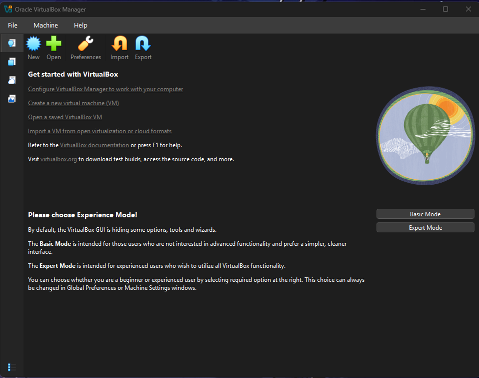
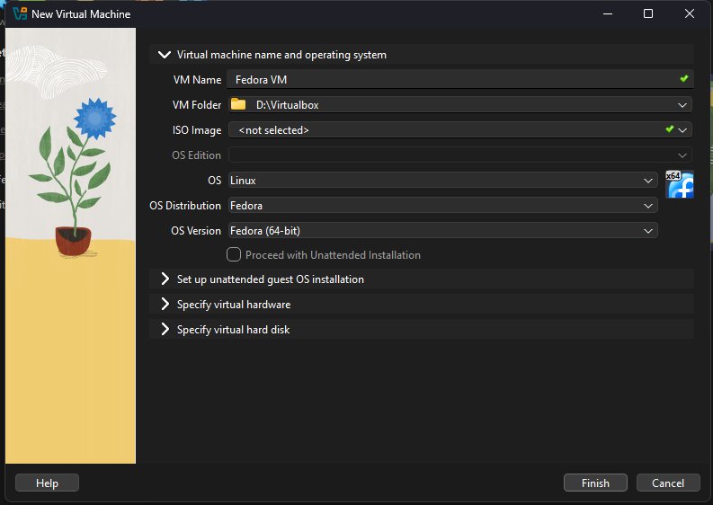
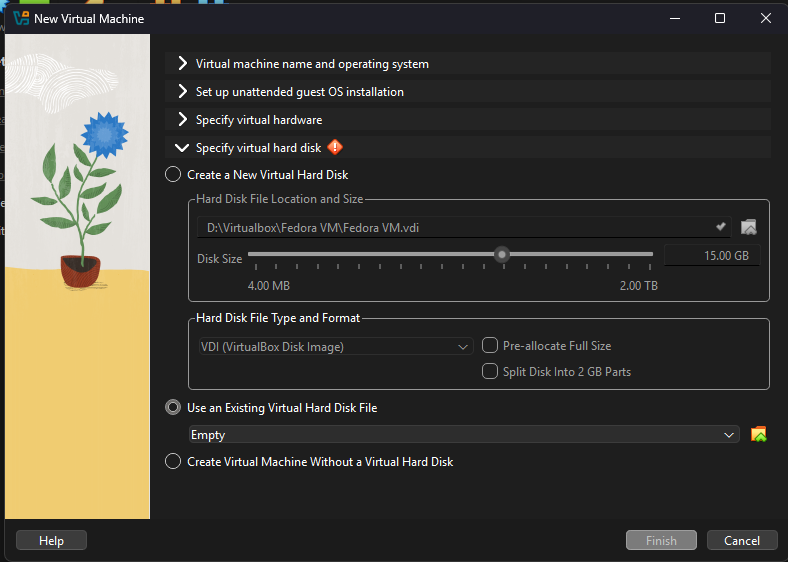

Download and use a pre-installed OS in VM software (VirtualBox)
You’ve been using Windows or macOS (or maybe Linux!) on your personal computer and you’re using Linux when you connect to Aviary.
We’re going to try something a little different here and use a different distribution of Linux called Fedora.
This course used to use SerenityOS, but switched images as they had no native ARM support.
SerenityOS is a fascinating project: it’s a brand new, from scratch operating system and environment that was started by one person that’s grown into a pretty big community.
The main author of SerenityOS (Andreas Kling) has been developing SerenityOS entirely in the open, including live-streaming coding on YouTube.
Download an image
We’re going to download an “image”. The full name for this thing is “disk image”, this is a bit for bit copy of a hard drive or disk. Everything else that we need to set up is going to be done in VirtualBox itself.
For our virtual machine, we are going to use one specific version from March 2026. Download the Fedora image from the following links:
The latest image of Fedora can be found here: https://fedoraproject.org/workstation/download/
The images that we provided have already been installed and setup for this class. The images that we have provided is a “Virtual Machine Disk” or a “Virtual Disk Image” file depending on if you have the x86_64 or the ARM image, this contains the hard drive for the virtual machine.
The image that you download is compressed using GZip, so you’re going to need to decompress the image before you can use it with VirtualBox.
Decompressing with macOS or Linux
Open your terminal and change directory to where the image was downloaded (probably your Downloads) folder.
Once you’re there, you can decompress it with
gunzip:
gunzip *.gzDecompressing with Windows
Windows doesn’t support decompressing GZipped files by default, so you’re going to need to install a new decompression tool that does.
We recommend you install 7-zip; it’s free and open source, supports a really wide variety of compression formats, and is fast.
Once you’ve installed 7-zip, you should be able to just double-click on the file you downloaded and decompress it.
Create a new VM
We’re going to be creating a new VM from an existing image. You’ll need to enable Expert Mode.
Then configure your VM following these settings, specifying the downloaded image under “Specify virtual hard disk > Use an Existing Virtual Hard Disk File”



Run the VM
Once you’ve got the VM configured, it’s time to start it!
If everything worked out, you should see Fedora starting up 🎉!
Snapshots
One thing we can do with running virtual machines that we can’t do with physical hardware is take snapshots 📷. Taking a snapshot of a virtual machine gives you the ability to capture the state of the virtual machine, then go back to that state.
Read a bit more about snapshots in the VirtualBox documentation about snapshots, then try it out!